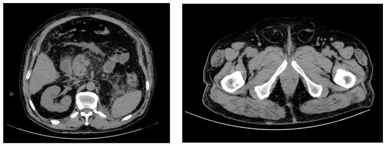
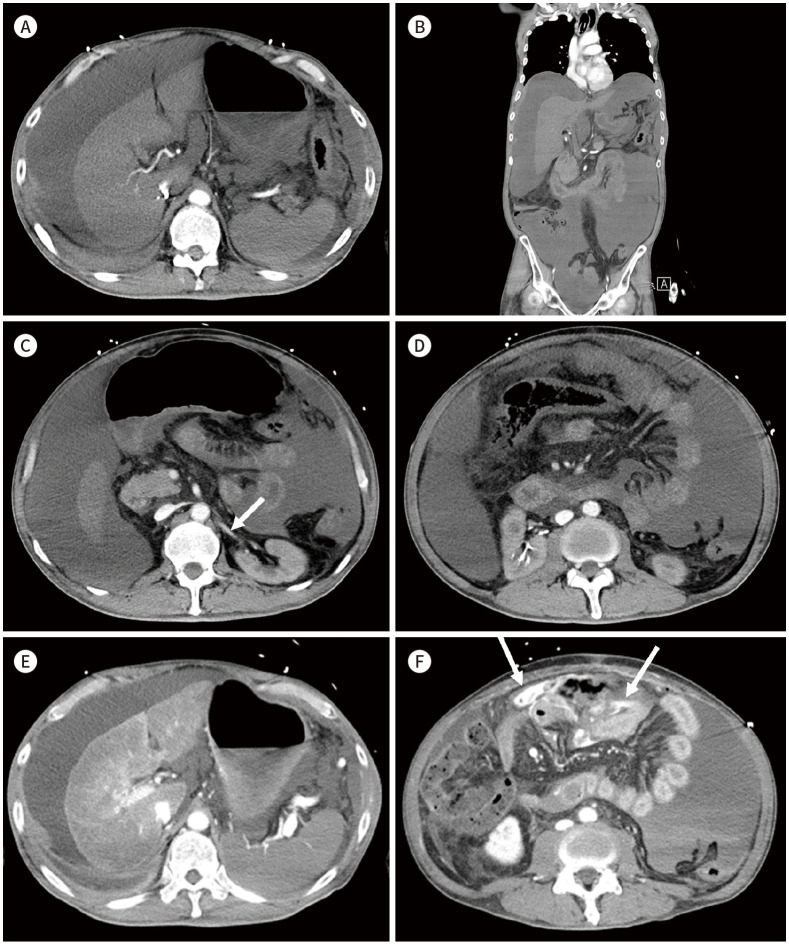
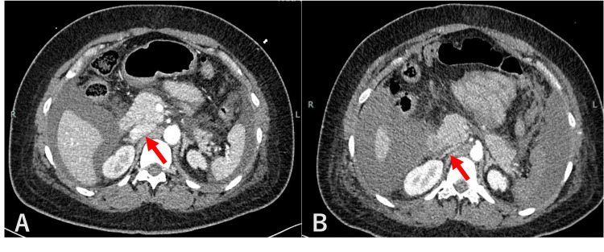
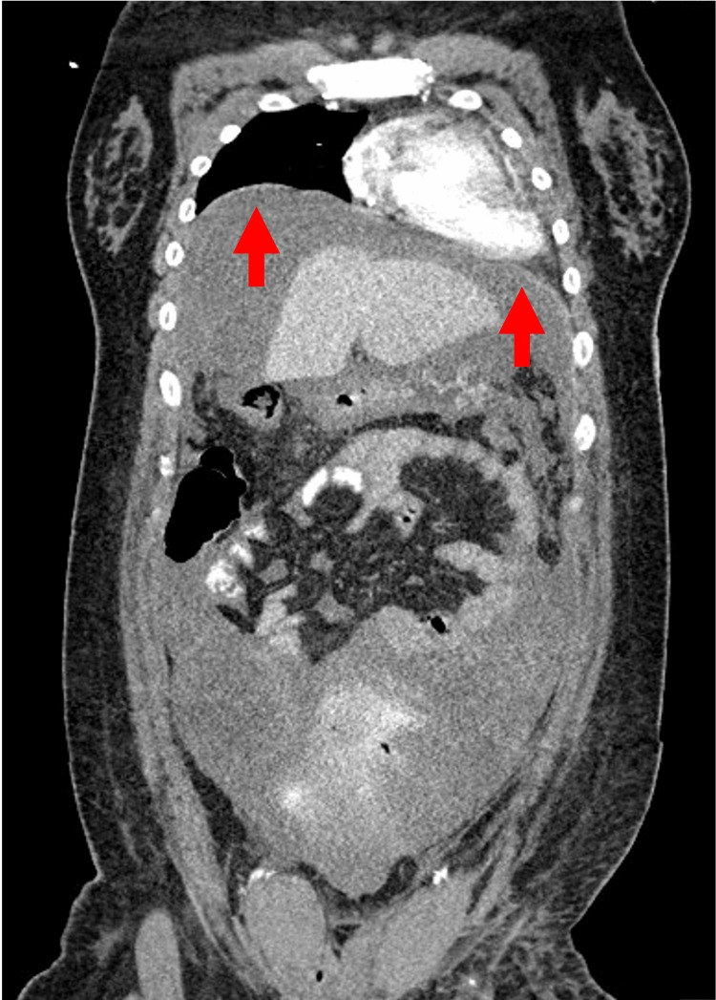

1946 — Chèn ép khoang bụng (ACS): CT báo động trước khi ta kịp đo áp lực bàng quang
Tags: pattern:tang-ap-luc-o-bung pattern:bung-tron pattern:hep-tm-chu-duoi pattern:co-hoanh-cao pattern:ngam-thuoc-kem vung:bung vung:thanh-bung score:WSACS-IAH protocol:CT-bung-co-can-quang protocol:do-ap-luc-bang-quang incidentaloma:khong
Mức chắc chắn (certainty): tổng hợp y văn (literature synthesis) — ghép đồng thuận WSACS 2013 + khảo sát quốc tế 2022–2023 của WSACS (World J Emerg Surg 2024, PMCID PMC11605967, CC BY 4.0), bài tổng quan ACS trong viêm tụy cấp (Diagnostics 2022, PMCID PMC9818265, CC BY 4.0), hai ca nguyên văn có ảnh (J Korean Soc Radiol 2025, PMCID PMC11973108, CC BY-NC 4.0; Cureus 2025, PMCID PMC12375933, CC BY 4.0) và hai đoàn hệ (World J Gastrointest Surg 2021, PMCID PMC8069070, CC BY-NC 4.0; J Clin Med 2025, PMCID PMC11818648, CC BY 4.0). Không có ca do nhóm tự chụp.
Câu chốt: tăng áp lực ổ bụng (intra-abdominal hypertension, IAH) là IAP ≥ 12 mmHg, còn chèn ép khoang bụng (abdominal compartment syndrome, ACS) là IAP > 20 mmHg + tổn thương cơ quan MỚI — chốt chẩn đoán là đo áp lực bàng quang, không phải CT. Nhưng CT là thứ báo động sớm và tìm nguyên nhân: bụng tròn (đường kính trước–sau ≥ đường kính ngang), TM chủ dưới dẹt như khe, vòm hoành cao, ngấm thuốc nhu mô kém + thuốc ứ ở tĩnh mạch ngoài ổ bụng. Ba con số định khung: tử vong ~50% khi ACS trên viêm tụy cấp nặng (PMC9818265), ACS gặp 2,9% bệnh nhân ECMO so với 0,8% ICU không ECMO (PMC11818648), và áp lực tưới máu ổ bụng (APP) bình thường 60 mmHg — dưới ngưỡng đó là bắt đầu mất tạng (PMC8069070).
1. Tổng quan bệnh học – cơ chế hình ảnh (TẠI SAO)
1.1. Định nghĩa có số — và vì sao phải thuộc
| Khái niệm | Ngưỡng (WSACS 2013) | Ghi chú |
|---|---|---|
| IAP bình thường | 5–7 mmHg (người khỏe, nằm ngửa); ~10 mmHg (bệnh nặng); 7–14 mmHg (béo) | đo ở thì thở ra, tư thế nằm ngửa |
| IAH | IAP ≥ 12 mmHg bền vững, 2 lần đo cách nhau 1–6 giờ | IAH là áp lực, chưa có suy tạng |
| ACS | IAP > 20 mmHg + tổn thương cơ quan mới (bài tổng quan dùng ngưỡng SOFA > 3) | ACS là hội chứng, phải can thiệp |
| Độ I / II / III / IV | 12–15 / 16–20 / 21–25 / > 25 mmHg | độ III–IV gần như chắc chắn cần can thiệp |
| APP (áp lực tưới máu ổ bụng) | APP = MAP − IAP, bình thường 60 mmHg | APP thấp hơn huyết áp động mạch trong tiên lượng tử vong |
- Vì sao gọi là "khoang" (compartment): ổ bụng là hộp kín có thành bụng đàn hồi. Bình thường độ tuân thủ thành bụng 250–450 mL/mmHg (PMC9818265): thêm 1 lít dịch làm IAP tăng rất ít. Nhưng khi thành bụng phù/bỏng/cứng hoặc ổ bụng đã đầy (máu tụ, dịch tụy, ruột giãn), độ tuân thủ giảm còn vài chục mL/mmHg → thêm vài trăm mL là IAP vọt qua 20 mmHg. Đây là lý do cùng một lượng máu tụ, người này chỉ đau bụng, người kia suy tạng.
- Vì sao tăng áp lực lại làm thiếu máu tạng: theo Laplace (sức căng thành ∝ áp lực × bán kính), áp lực ngoài lòng mạch tăng → mạch máu bị bóp từ ngoài vào, chênh áp tưới máu giảm. Hệ quả theo thứ tự: tĩnh mạch (áp lực thấp) bị xẹp trước → mao mạch ruột/gan/thận giảm tưới → thiểu niệu, toan chuyển hóa, phù ruột.
1.2. Vì sao CT trông như vậy — vật lý từng dấu hiệu
- TM chủ dưới dẹt (slit-like IVC): thành TM chủ dưới mỏng, áp lực trong lòng chỉ 2–8 mmHg ở người giảm thể tích. Khi áp lực ngoài lòng 20–25 mmHg, TM chủ dưới bị ép dẹt thành khe — ca Cureus chụp ngày trước thấy TM chủ dưới còn tròn, ngày ngưng tim thấy dẹt (PMC12375933). Đây là dấu cơ học, không phải dấu viêm.
- Thuốc ứ ở tĩnh mạch ngoài ổ bụng (contrast stagnation): cùng cơ chế — máu tĩnh mạch từ chi dưới và tạng không về được → ứ ở tĩnh mạch tay đầu (brachiocephalic), trên CT thấy thuốc đọng đậm, gần như không rửa (ca Cureus). Đọc CT ở bệnh nhân ACS phải nhìn tĩnh mạch ngoài ổ bụng, không chỉ nhu mô.
- Ngấm thuốc nhu mô kém + thành ruột ngấm mạnh: khi APP giảm, thuốc tới gan/lách/thận chậm và loãng → nhu mô "nhạt" như chụp thiếu thuốc; trong khi ruột thiếu máu lại có ngấm niêm mạch mạnh, thành dày, phù quanh ruột ("shock bowel") do giãn mạch và rò mao mạch. Ca J Korean Soc Radiol: máu tự do 15–20 HU, gan–lách–thận ngấm kém, TM thận dẹt (mũi tên), đường kính trước–sau thành bụng tăng (PMC11973108).
- Vòm hoành cao: ổ bụng căng đẩy cơ hoành lên → giảm thể tích phổi, xẹp đáy phổi, tăng áp lực đường thở. Ca Cureus: vòm hoành lên ngang thân đốt sống ngực T5 (PMC12375933) — đây là dấu gián tiếp nhưng rất dễ thấy trên lát cắt ngực bụng.
- Bụng tròn (round belly sign): ổ bụng căng làm đường kính trước–sau ≥ đường kính ngang — bình thường bụng người nằm ngửa rộng hơn cao; khi đảo chiều tỷ lệ đó, nghĩ tới IAH (ảnh mục 2, PMC9818265).
1.3. Ngưỡng định lượng nằm lòng (dịch tễ – tiên lượng)
| Đại lượng | Số liệu | Nguồn |
|---|---|---|
| ACS ở bệnh nhân ECMO | 2,9% (47/1.643); ở nhóm được hồi sinh tim phổi: 4,2% (32/766) | PMC11818648 |
| ACS ở ICU không ECMO (cùng trung tâm) | 0,8% (291/36.795) | PMC11818648 |
| IAH/ACS trong viêm tụy cấp nặng | ~15%; tử vong ~50% khi đã có ACS | PMC9818265 |
| Độ tuân thủ thành bụng bình thường | 250–450 mL/mmHg | PMC9818265 |
| Nghiệm pháp đo IAP qua bàng quang | tối đa 25 mL nước muối vô khuẩn; nằm ngửa, cuối thì thở ra | PMC8069070 |
| Đầu giường cao 30–40° | làm IAP tăng thêm 4–9 mmHg | PMC8069070 |
| APP mục tiêu | > 60 mmHg (bình thường 60) | PMC8069070 |
| Máu tự do trên CT trong ca ACS | 15–20 HU (máu chưa đông, còn loãng) | PMC11973108 |
- Chưa rõ — cần tra: không có ngưỡng diện tích/đường kính cụ thể trên CT được thẩm định để chẩn đoán ACS; các bài dùng dấu hiệu định tính (bụng tròn, TM chủ dưới dẹt, cơ hoành cao) và IAP là tiêu chuẩn vàng. Vì vậy bài này không đặt ra "tỷ lệ AP/ngang > 0,8 là ACS" — không có nguồn.
2. Mẫu hình + chẩn đoán phân biệt theo vị trí (Gamut)
- Mẫu hình chung: bụng căng tròn, TM chủ dưới dẹt, cơ hoành cao, nhu mô ngấm thuốc kém, ruột dày – ngấm niêm mạch mạnh, ± dịch/máu tự do 15–20 HU.
- Theo khoang tích tụ (phải chỉ ra được khoang nào đang chiếm chỗ):
- Thành bụng: tụ máu bao cơ thẳng (bài 1936), phù thành bụng sau bỏng, huyết khối tĩnh mạch chủ dưới thành bụng, bỏng > 20% diện tích cơ thể (ACS thứ phát).
- Ổ phúc mạc: máu tụ do chấn thương (ca PMC11973108), cổ trướng căng (xơ gan, ung thư phúc mạc), dịch tụy, khí tự do, dịch thẩm thấu sau lọc màng bụng.
- Sau phúc mạc: máu tụ sau phúc mạc, viêm tụy cấp hoại tử (PMC9818265), vỡ phình động mạch chủ bụng, thoát thuốc sau can thiệp.
- Lòng ruột: giãn ruột non/đại tràng, liệt ruột, xoắn, tắc ruột non–non (bài 3128), hội chứng Ogilvie.
- Ngoài ổ bụng (ACS thứ tự khác): bỏng ngực – thành ngực, thở máy PEEP cao, hồi sinh tim phổi kéo dài, truyền dịch khối lượng lớn.
- Mẫu hình mô phỏng (không phải ACS): béo bụng (bụng tròn nhưng IAP 7–14 mmHg, không suy tạng); cổ trướng mạn (dịch nhiều nhưng thành bụng mềm, chọc ra là giảm); suy tim phải (TM chủ dưới giãn chứ không dẹt).
- Câu hỏi định hướng: "Khoang nào đang chiếm thể tích, và thành bụng có còn đàn hồi không?" — trả lời được hai câu này là ra hướng xử trí (chọc/dẫn lưu vs mở cân bụng).

Bệnh nhân 76 tuổi, viêm tụy cấp hoại tử biến chứng ACS: ổ bụng căng tròn, đường kính trước–sau ≥ đường kính ngang (dấu bụng tròn), kèm thoát vị bẹn hai bên do áp lực ổ bụng cao đẩy tạng ra ngoài. Ảnh nguyên bản 2 panel, không crop. Nguồn: Diagnostics 2022, PMCID PMC9818265, CC BY 4.0.3. Bảng so sánh phân biệt (ma trận đối chiếu)
| Thực thể (entity) | Hình ảnh điển hình | Chốt vào (rule-in) | Chốt loại (rule-out) | Gợi ý xác nhận |
|---|---|---|---|---|
| ACS (nguyên phát) | Bụng tròn, TM chủ dưới dẹt, cơ hoành cao, nhu mô ngấm kém, thuốc ứ tĩnh mạch tay đầu, ruột dày ngấm niêm mạch | IAP > 20 mmHg + suy tạng mới (thiểu niệu, tăng áp lực đường thở, toan); CT có ≥ 2 dấu hiệu trên | TM chủ dưới giãn + tĩnh mạch cổ nổi → nghĩ suy tim phải, không phải ACS | Đo áp lực bàng quang (25 mL, nằm ngửa, cuối thì thở ra); APP = MAP − IAP |
| IAH chưa thành ACS | CT có thể bình thường hoặc chỉ bụng tròn nhẹ | IAP 12–20 mmHg, chưa suy tạng mới | Đã có suy tạng mới → không còn là IAH đơn thuần | Đo IAP 2 lần cách 1–6 giờ; theo dõi mỗi 4–6 giờ |
| Shock bowel / thiếu máu ruột non (bài 1908) | Ruột giãn, thành mỏng ngấm mạch mạnh, phù mạc treo, dịch; mạch mạc treo có thể tắc | Tụt áp + toan lactic, mạch mạc treo tổn thương trên CTA | TM chủ dưới dẹt + bụng tròn + IAP cao → nguyên nhân là áp lực, không chỉ giảm tưới máu | CTA thì cổng + đo IAP; nội soi khi nghi hoại tử |
| Tụ máu bao cơ thẳng (bài 1936) | Khối tăng tỷ trọng trong bao cơ thẳng, hình thoi, đẩy phúc mạc vào trong | Đau thành bụng khu trú + dấu Carnival/Fothergill, sau mổ/tiêm kháng đông | Máu tụ nhỏ, không đổi IAP → không gây ACS | Siêu âm/CT; đo IAP nếu máu tụ lớn |
| Cổ trướng căng | Dịch tự do nhiều, bụng tròn, cơ hoành cao; không có máu tụ | Chọc dịch giảm IAP ngay lập tức | Dịch ít mà IAP vẫn cao → tìm nguyên nhân khác (thành bụng, ruột) | Siêu âm + chọc dẫn lưu; đo IAP trước/sau |
| Béo bụng (biến thể) | Thành bụng dày mỡ, bụng tròn, TM chủ dưới bình thường | Không suy tạng, IAP nền 7–14 mmHg | Suy tạng mới + TM chủ dưới dẹt → không phải béo đơn thuần | Đo IAP; so phim cũ |
| Thoát vị thành bụng do áp lực | Tạng/thành ruột chui qua lỗ thoát vị (bẹn, rốn, vết mổ) hai bên | Bụng tròn + thoát vị mới xuất hiện cùng đợt | Thoát vị cũ, mạn không kèm bụng tròn | Khám + CT; theo dõi nghẹt |

*Nam 54 tuổi, ACS sau tai nạn giao thông. A (thì cổng, trục ngang): máu tự do lượng lớn ~15–20 HU, không thấy thoát mạch hoạt tính, gan–lách–thành ruột ngấm thuốc kém. B (trục đứng): cơ hoành cao, máu tự do nhiều. C–D (thì muộn 3 phút): TM thận dẹt (mũi tên), đường kính trước–sau thành bụng tăng, nhu mô vẫn ngấm kém trong khi TM chủ dưới ngấm tốt. E–F (sau đặt catheter dẫn lưu qua da): thoát mạch xuất hiện ở mạc treo cạnh rốn (mũi tên) — ổ máu tụ do nhánh tĩnh mạch mạc treo trên; đường kính trước–sau giảm sau khi giảm áp. Ảnh nguyên bản 6 panel, không crop. Nguồn: J Korean Soc Radiol 2025, PMCID PMC11973108, CC BY-NC 4.0.*4. Protocol chụp + đo áp lực + phân tầng xử trí
4.1. CT bụng–chậu: chụp thế nào để trả lời được câu hỏi áp lực
- Thì cổng (portal venous) là thì chính — cần nhu mô tạng + tĩnh mạch; thì động mạch muộn vô dụng ở bệnh nhân tụt áp vì thuốc tới muộn và loãng. Ca PMC11973108 chụp thì cổng rồi thì muộn 3 phút để tìm thoát mạch.
- Không trì hoãn vì chờ "đủ thuốc" — bệnh nhân ACS có thể ngưng tim ngay sau khi rời máy (ca Cureus). Chụp nhanh, không cản quang đường tiêu hóa khi bệnh nhân nặng.
- Đọc theo trình tự 6 bước (ghi vào phiếu đọc):
- Bước 1 — hình dạng bụng: đường kính trước–sau so với ngang (dấu bụng tròn).
- Bước 2 — tĩnh mạch lớn: TM chủ dưới (dẹt/khe?), TM thận hai bên (dẹt?), tĩnh mạch tay đầu (thuốc ứ?).
- Bước 3 — cơ hoành: vị trí vòm hoành, xẹp đáy phổi, tràn dịch màng phổi.
- Bước 4 — thành ruột: độ dày, mức ngấm niêm mạch, phù mạc treo, hơi trong thành.
- Bước 5 — khoang tích tụ: máu/dịch tự do (đo HU), ổ dịch tụy, máu tụ sau phúc mạc/thành bụng.
- Bước 6 — mạch và tạng đặc: khuyết thuốc động mạch mạc treo (bài 1908), nhồi máu gan/lách/thận, giãn đường mật.
- Chụp lại sau khi đặt catheter dẫn lưu (khi bệnh nhân ổn định): ca PMC11973108 — lần chụp đầu không thấy nguồn chảy máu vì áp lực cao + thuốc kém; sau khi giảm áp, nguồn chảy (nhánh tĩnh mạch mạc treo trên) hiện ra. Đây là bài học: CT âm tính về nguồn máu trong ACS không phải CT âm tính.
4.2. Đo áp lực bàng quang (chuẩn vàng) — 5 điều bắt buộc
- Tư thế: nằm ngửa hoàn toàn; đầu giường cao 30–40° làm IAP tăng 4–9 mmHg → không đo khi đầu cao.
- Lượng nước: tối đa 25 mL nước muối vô khuẩn (bơm nhiều hơn sẽ làm tăng IAP giả tạo).
- Thì đo: cuối thì thở ra, không gồng cơ bụng.
- Mốc 0: đường nách giữa ngang mào chậu.
- Số lần: 2 lần cách nhau 1–6 giờ mới gọi là IAH bền vững; sau đó theo dõi mỗi 4–6 giờ khi còn nguy cơ.
- Chống chỉ định: đã cắt bàng quang, vỡ bàng quang → dùng phương pháp khác (dạ dày, trực tràng, tĩnh mạch chủ dưới).
4.3. Phân tầng xử trí
| Mức | IAP / APP | Xử trí |
|---|---|---|
| Nguy cơ (chưa IAH) | IAP < 12 mmHg | Theo dõi IAP mỗi 4–6 giờ; hạn chế dịch, giảm PEEP nếu được |
| IAH độ I–II | 12–20 mmHg, chưa suy tạng | Điều trị nội: đặt sonde dạ dày, prokinetic, trung tiện, giảm dịch, lợi tiểu/lọc máu, giảm PEEP, giảm đau–an thần |
| IAH độ III–IV | 21–25 / > 25 mmHg | Thêm giãn cơ (cisatracurium 0,15 mg/kg bolus), dẫn lưu dịch/máu dưới siêu âm hoặc CT, cân nhắc mở cân bụng |
| ACS | IAP > 20 mmHg + suy tạng mới, hoặc APP < 60 mmHg | Giảm áp ngay: dẫn lưu qua da nếu có ổ dịch → mở cân bụng (decompressive laparotomy) + đóng bụng tạm (Bogota/VAC) |
flowchart TD
A[Bệnh nhân nguy cơ: chấn thương, viêm tụy, bỏng, truyền dịch lớn, ECMO] --> B[Đo áp lực bàng quang: 25 mL, nằm ngửa, cuối thì thở ra]
B --> C{IAP}
C -->|< 12 mmHg| D[Theo dõi mỗi 4-6 giờ + hạn chế dịch]
C -->|12-20 mmHg| E{Suy tạng mới?}
E -->|Không| F[IAH: điều trị nội, dẫn lưu ổ dịch nếu có]
E -->|Có| G[ACS: giảm áp khẩn]
C -->|"trên 20 mmHg"| G
G --> H{Có ổ dịch hoặc máu tự do dẫn lưu được?}
H -->|Có| I[Dẫn lưu qua da dưới siêu âm/CT + đo lại IAP]
H -->|Không| J[Mở cân bụng + đóng bụng tạm]
I --> K{IAP giảm và tạng hồi phục?}
K -->|Không| J
K -->|Có| L[Chụp lại CT tìm nguồn chảy máu + theo dõi IAP]
J --> L
D --> M[Đánh giá lại APP = MAP - IAP, mục tiêu > 60 mmHg]
F --> M
L --> M
- Mốc thời gian: mở cân bụng muộn làm tăng tử vong; các ca sống sót trong y văn đều được giảm áp trong vòng vài giờ sau khi nhận ra (ca Cureus: ngưng tim ngay sau chụp CT → mổ giảm áp cấp cứu, cứu sống không di chứng nặng).
5. Biến thể bình thường và cạm bẫy
- Cạm bẫy 1 — "CT bình thường nên không có IAH": IAH độ I–II thường không có dấu hiệu CT. CT chỉ giúp khi áp lực đủ cao để bóp tĩnh mạch; chẩn đoán vẫn là IAP.
- Cạm bẫy 2 — đọc "ngấm thuốc kém" thành "chụp thiếu thuốc": ở ACS, thuốc ứ ở tĩnh mạch tay đầu là dấu cùng một cơ chế; đừng yêu cầu chụp lại thì động mạch (làm chậm giảm áp).
- Cạm bẫy 3 — TM chủ dưới dẹt do giảm thể tích: giảm thể tích cũng làm TM chủ dưới dẹt. Phân biệt bằng tĩnh mạch ngoài ổ bụng ứ + bụng tròn + IAP cao; giảm thể tích đơn thuần thì bụng mềm, không tròn.
- Cạm bẫy 4 — bỏ sót khoang tích tụ: máu tụ thành bụng (bài 1936) và sau phúc mạc dễ bị đọc là "dịch tự do"; phải truy khoang — quyết định chọc ở đâu khác nhau hoàn toàn.
- Cạm bẫy 5 — chọc/dẫn lưu sai chỗ: máu tụ trong bao cơ thẳng không dẫn lưu qua đường phúc mạc; ổ dịch tụy dẫn lưu qua đường sau phúc mạc. Dẫn lưu sai → không giảm IAP mà còn gây nhiễm.
- Cạm bẫy 6 — cho rằng hết ACS sau khi dẫn lưu: IAP có thể tăng lại khi dịch tái tích (ca viêm tụy); phải đo lại 4–6 giờ và tìm nguồn chảy máu nếu dịch ra nhiều.
- Cạm bẫy 7 — bỏ qua thoát vị mới: thoát vị bẹn/rốn/vết mổ xuất hiện cùng đợt bụng căng là dấu áp lực, không phải "thoát vị tình cờ" (ảnh PMC9818265).
- Cạm bẫy 8 — béo bụng: người béo có IAP nền 7–14 mmHg và bụng tròn sẵn; chỉ gọi ACS khi có suy tạng mới + TM chủ dưới dẹt.
- Cạm bẫy 9 — tư thế đo: đo khi đầu giường cao 30–40° làm IAP tăng 4–9 mmHg → chẩn đoán ACS giả. Luôn ghi tư thế + lượng nước bơm cạnh con số.

Nữ 32 tuổi, ngày 2 sau mổ lấy thai, bụng chướng tăng rồi ngưng tim ngay sau chụp CT. A — ngày trước: TM chủ dưới còn tròn, có thuốc (mũi tên đỏ). B — lúc ngưng tim: TM chủ dưới dẹt thành khe, nhu mô ngấm kém. Mổ giảm áp cấp cứu, bệnh nhân sống không di chứng nặng. Ảnh nguyên bản 2 panel, không crop. Nguồn: Cureus 2025, PMCID PMC12375933, CC BY 4.0.
Cùng bệnh nhân, cùng lần chụp: vòm hoành lên ngang thân đốt sống ngực T5 — ổ bụng căng đẩy cơ hoành lên, làm giảm thể tích phổi và tăng áp lực đường thở (cơ chế "khoang kép" bụng–ngực). Ảnh nguyên bản, không crop. Nguồn: Cureus 2025, PMCID PMC12375933, CC BY 4.0.6. Tự lượng giá — Blind Quiz
Ca 1 — Nam 54 tuổi, tai nạn giao thông, bụng chướng nhanh, huyết áp 80/50 mmHg, nước tiểu 10 mL/giờ. CT bụng thì cổng:
- Hỏi: (1) Dấu hiệu nào trên CT hướng tới ACS chứ không chỉ là mất máu? (2) Vì sao không thấy nguồn chảy máu ở lần chụp này? (3) Bước tiếp theo ngay tại giường?
Bấm để hiện đáp án (findings + chẩn đoán)
- Dấu hiệu: máu tự do 15–20 HU; gan–lách–thành ruột ngấm kém; TM thận dẹt (mũi tên); đường kính trước–sau thành bụng tăng; cơ hoành cao — mẫu hình ACS nguyên phát do máu trong ổ bụng.
- Vì sao không thấy nguồn: áp lực ổ bụng cao + giảm tưới máu mạc treo làm thuốc tới muộn và loãng, nên thoát mạch không hiện. Sau khi giảm áp bằng catheter, CT lặp thấy thoát mạch ở nhánh tĩnh mạch mạc treo trên.
- Bước tiếp: đo áp lực bàng quang (25 mL, nằm ngửa, cuối thì thở ra, mốc đường nách giữa ngang mào chậu); nếu IAP > 20 mmHg + thiểu niệu/toan → dẫn lưu qua da hoặc mở cân bụng.
- Nguồn ảnh + số liệu: J Korean Soc Radiol 2025, PMCID PMC11973108, CC BY-NC 4.0.
Ca 2 — Nữ 32 tuổi, ngày 2 sau mổ lấy thai, bụng chướng tăng nhanh, khó thở, rồi ngưng tim. CT được chụp ngay trước khi ngưng tim (ảnh dưới).
- Hỏi: (1) Hai dấu hiệu CT nào được dùng để chẩn đoán? (2) Vì sao không chờ kết quả xét nghiệm? (3) Can thiệp nào đã cứu bệnh nhân?
Bấm để hiện đáp án
- Dấu hiệu: TM chủ dưới dẹt thành khe so với ngày trước (ảnh A→B); vòm hoành lên ngang T5; thuốc ứ ở tĩnh mạch tay đầu (không rửa). Bộ ba này = ACS.
- Vì sao không chờ: ACS có thể tiến tới ngưng tim trong vài phút; chẩn đoán dựa trên IAP + suy tạng, không dựa vào men tim hay khí máu.
- Can thiệp: mở cân bụng giải áp cấp cứu + đóng bụng tạm; bệnh nhân sống, không di chứng nặng.
- Nguồn số liệu: Cureus 2025, PMCID PMC12375933, CC BY 4.0.
Ca 3 — Nam 76 tuổi, viêm tụy cấp hoại tử ngày 6, bụng chướng, PaO₂/FiO₂ giảm, nước tiểu ít. CT bụng có cản quang:
- Hỏi: (1) Dấu hiệu hình dạng bụng gọi là gì? (2) Nó có đủ để chẩn đoán ACS không? (3) Xử trí đầu tay?
Bấm để hiện đáp án
- Dấu hiệu: bụng tròn (round belly sign) — đường kính trước–sau ≥ ngang; kèm thoát vị bẹn hai bên do áp lực cao.
- Không đủ: dấu này chỉ gợi ý IAH; chẩn đoán ACS cần IAP > 20 mmHg + suy tạng mới. Ở viêm tụy cấp nặng, ~15% có IAH/ACS và tử vong ~50% khi đã có ACS.
- Xử trí: điều trị nội (sonde dạ dày, prokinetic, giảm dịch, giảm đau) + dẫn lưu ổ dịch tụy qua da dưới hướng dẫn siêu âm/CT; mở cân bụng nếu không đáp ứng.
- Nguồn ảnh + số liệu: Diagnostics 2022, PMCID PMC9818265, CC BY 4.0.
Bài liên quan chéo
- 1936 – Tụ máu bao cơ thẳng bụng (nguyên nhân thành bụng của ACS — cùng bệnh cảnh, khác khoang)
- 1908 – Thiếu máu mạc treo & bóc tách động mạch tạng (hàng phân biệt "ruột thiếu máu" — mạch tắc vs áp lực cao)
- 1911 – Viêm đại tràng thiếu máu (tổn thương ruột do giảm tưới máu)
- 3128 – Lồng ruột non–non ở người lớn (nguyên nhân lòng ruột gây chướng)
- 098 – Barotrauma & tràn khí áp lực thở máy (hệ quả lồng ngực của cơ hoành cao + PEEP cao)
- 160 – Đau bụng cấp (tiếp cận) (khung tiếp cận bụng cấp trước khi nghĩ tới ACS)
Ảnh
1946_acs_CT_RoundBelly_PMC9818265-F2.jpg— dấu bụng tròn + thoát vị bẹn hai bên trong ACS do viêm tụy cấp; Diagnostics 2022, PMCID PMC9818265, CC BY 4.0.1946_acs_CT_Axial-Coronal_PMC11973108-F1.jpg— 6 panel CT trước/sau dẫn lưu qua da (máu 15–20 HU, TM thận dẹt, nguồn chảy từ nhánh TM mạc treo trên); J Korean Soc Radiol 2025, PMCID PMC11973108, CC BY-NC 4.0.1946_acs_CT_IVC_PMC12375933-F2.jpg— so sánh TM chủ dưới ngày trước vs lúc ngưng tim; Cureus 2025, PMCID PMC12375933, CC BY 4.0.1946_acs_CT_Diaphragm_PMC12375933-F3.jpg— vòm hoành cao ngang T5 trong cùng ca; Cureus 2025, PMCID PMC12375933, CC BY 4.0.- Chi tiết nguồn, giấy phép, phái sinh:
images/CREDITS.md; link bài gốc:sources.md.
Không dùng để chẩn đoán độc lập khi chưa có người hướng dẫn.